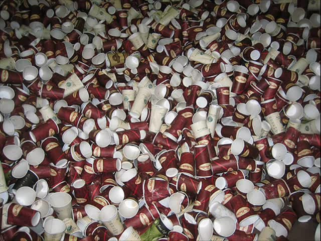

Design of Experiments in Python
Hank Anderson
- Founded in 1985 in Minneapolis
- Focused on Design of Experiments
- Makers of Design-Expert® software and dexpy
What is Design of Experiments (DoE)?
A systematic series of tests, in which purposeful changes are made to input factors, so that you may identify causes for significant changes in the output responses.

History of DOE
 R.A. Fisher
R.A. Fisher- 1919 - Rothamsted Experimental Station
- ANOVA, F-test, null hypothesis
- 1935 - The Design of Experiments
- "The Lady Tasting Tea" experiment
"Purposeful Changes"
Correlation != Causation
To consult the statistician after an experiment is finished is often merely to ask him to conduct a post mortem examination. He can perhaps say what the experiment died of.- R.A. Fisher
What Is DOE Used For?
Screening - Identify important factors
Example: A manufacturer changing many different properties of a stent to determine which ones affect burst pressure.
What Is DOE Used For?
Optimization - Improve the output of your process
Example: Multifactor testing of different layouts of a website.
What Is DOE Used For?
Robustness - Find a combination of inputs that produces a consistent result
Example: Injection molding process with a difficult to control moisture component.
How much coffee do we need to drink?
Statistical Power
Power is expressed as a probability to detect an effect of size Δ, given noise σ. This is typically given as a delta to sigma ratio Δ/σ. Power is a function of the signal to noise ratio, as well as the number and layout of experiments in the design.
Power Example
We taste test 25 pots of coffee with light beans, and 25 pots with dark beans. There is a variance of 1.5 taste rating from pot to pot.
If we expect a 0.5 change in the taste rating when going from light to dark, what is the likelihood we would detect it?

(Power: 37.86%)
Note: this assumes that we reject H0 at p <= 0.05
Power Example - Increase Delta
What if we don't care about a taste increase of 0.5? That's not that much better than the current coffee, after all. Instead, if we say we only care about a change in rating above 2, what is the likelihood we would detect such a change?
(Power: 99.99983%)
Power Example - Decrease Noise
Instead of lowering our standards for our noisy taste ratings, instead we could bring in expert testers who have a much more discerning palate. These tasters decrease the taste rating variability from 1.5 to 0.75.

(Power: 91%)
Power Example - Increase Runs
If expert testers are too expensive, and we are unwilling to compromise our standards, then the only remaining option is to change the experimental design. In this toy example, there isn't much we can do other than increase the number of pots of coffee from 50 to 200.

(Power: 91.39%)
For more complicated designs changing the structure of the design can also increase power.
One Factor at a Time Experimentation
- Hold all inputs constant, then change one at a time
- Cannot detect interactions, e.g. grind size and amount of coffee have a synergistic relationship
- Inefficient

Calculating Power with dexpy: OFAT
base_point = [-1, -1, -1, -1, -1]
ofat_points = [base_point]
for i in range(0, 5):
new_point = base_point[:]
new_point[i] = 1
ofat_points.append(new_point)
ofat_df = pd.DataFrame(ofat_points*5,
columns=['amount',
'grind_size',
'brew_time',
'grind_type',
'beans'])
model = ' + '.join(ofat_df.columns)
ofat_power = dexpy.power.f_power('+'.join(ofat_df.columns),
ofat_df, 2.0, 0.05)
Calculating Power with dexpy: Factorial
full_design = dexpy.factorial.build_factorial(5, 2**5)
full_design.columns = ['amount',
'grind_size',
'brew_time',
'grind_type',
'beans']
model = ' + '.join(full_design.columns)
factorial_power = dexpy.power.f_power(model, full_design, 2.0, 0.05)
Fractional Factorial
coffee_design = dexpy.factorial.build_factorial(5, 2**(5-1))
coffee_design.columns = ['amount',
'grind_size',
'brew_time',
'grind_type',
'beans']
model = ' + '.join(coffee_design.columns)
fractional_power = dexpy.power.f_power(model, coffee_design, 2.0, 0.05)
2(5-1) Factorial Power
| Power | |
|---|---|
| amount | 96.55% |
| grind_size | 96.55% |
| brew_time | 96.55% |
| grind_type | 99.61% |
| beans | 99.61% |
2(5-1) Factorial Power
(Interaction Model)
coffee_design = dexpy.factorial.build_factorial(5, 2**(5-1))
coffee_design.columns = ['amount',
'grind_size',
'brew_time',
'grind_type',
'beans']
twofi_model = "(" + '+'.join(coffee_design.columns) + ")**2"
fractional_power = dexpy.power.f_power(twofi_model, coffee_design,
2.0, 0.05)
2(5-1) Factorial Power
(Interaction Model)
| Power | |
|---|---|
| amount | 93.67% |
| grind_size | 93.67% |
| brew_time | 93.67% |
| grind_type | 98.91% |
| beans | 98.91% |
| amount:grind_size | 93.67% |
| amount:brew_time | 93.67% |
| amount:grind_type | 93.67% |
| amount:beans | 93.67% |
| grind_size:brew_time | 93.67% |
| grind_size:grind_type | 93.67% |
| grind_size:beans | 93.67% |
| brew_time:grind_type | 93.67% |
| brew_time:beans | 93.67% |
| grind_type:beans | 98.91% |
| amount | grind_size | brew_time | grind_type | beans | |
|---|---|---|---|---|---|
| 0 | 2.5 | 8 | 3.5 | burr | dark |
| 1 | 2.5 | 8 | 3.5 | blade | light |
| 2 | 2.5 | 8 | 4.5 | burr | light |
| 3 | 2.5 | 8 | 4.5 | blade | dark |
| 4 | 2.5 | 10 | 3.5 | burr | light |
| 5 | 2.5 | 10 | 3.5 | blade | dark |
| 6 | 2.5 | 10 | 4.5 | burr | dark |
| 7 | 2.5 | 10 | 4.5 | blade | light |
| 8 | 4 | 8 | 3.5 | burr | light |
| 9 | 4 | 8 | 3.5 | blade | dark |
| 10 | 4 | 8 | 4.5 | burr | dark |
| 11 | 4 | 8 | 4.5 | blade | light |
| 12 | 4 | 10 | 3.5 | burr | dark |
| 13 | 4 | 10 | 3.5 | blade | light |
| 14 | 4 | 10 | 4.5 | burr | light |
| 15 | 4 | 10 | 4.5 | blade | dark |
| 16 | 3.25 | 9 | 4 | burr | light |
| 17 | 3.25 | 9 | 4 | burr | dark |
| 18 | 3.25 | 9 | 4 | blade | light |
| 19 | 3.25 | 9 | 4 | blade | dark |
| 20 | 3.25 | 9 | 4 | burr | light |
| 21 | 3.25 | 9 | 4 | burr | dark |
| 22 | 3.25 | 9 | 4 | blade | light |
| 23 | 3.25 | 9 | 4 | blade | dark |
Conduct the Experiment
| amount | grind_size | brew_time | grind_type | beans | taste_rating | |
|---|---|---|---|---|---|---|
| 0 | 2.5 | 8 | 3.5 | burr | dark | 4.53 |
| 1 | 2.5 | 8 | 3.5 | blade | light | 1.6336 |
| 2 | 2.5 | 8 | 4.5 | burr | light | 1.363 |
| 3 | 2.5 | 8 | 4.5 | blade | dark | 8.7 |
| 4 | 2.5 | 10 | 3.5 | burr | light | 1.679 |
| 5 | 2.5 | 10 | 3.5 | blade | dark | 2.895 |
| 6 | 2.5 | 10 | 4.5 | burr | dark | 7.341 |
| 7 | 2.5 | 10 | 4.5 | blade | light | 3.642 |
| 8 | 4 | 8 | 3.5 | burr | light | 6.974 |
| 9 | 4 | 8 | 3.5 | blade | dark | 3.398 |
| 10 | 4 | 8 | 4.5 | burr | dark | 3.913 |
| 11 | 4 | 8 | 4.5 | blade | light | 9.04 |
| 12 | 4 | 10 | 3.5 | burr | dark | 5.092 |
| 13 | 4 | 10 | 3.5 | blade | light | 3.718 |
| 14 | 4 | 10 | 4.5 | burr | light | 8.227 |
| 15 | 4 | 10 | 4.5 | blade | dark | 6.992 |
| 16 | 3.25 | 9 | 4 | burr | light | 4.419 |
| 17 | 3.25 | 9 | 4 | burr | dark | 6.806 |
| 18 | 3.25 | 9 | 4 | blade | light | 3.512 |
| 19 | 3.25 | 9 | 4 | blade | dark | 5.36 |
| 20 | 3.25 | 9 | 4 | burr | light | 4.865 |
| 21 | 3.25 | 9 | 4 | burr | dark | 6.342 |
| 22 | 3.25 | 9 | 4 | blade | light | 4.38 |
| 23 | 3.25 | 9 | 4 | blade | dark | 5.942 |
Interaction Model
twofi_model = "(" + '+'.join(coffee_design.columns) + ")**2"
lm = statsmodels.formula.api.ols("taste_rating ~" + twofi_model,
data=coffee_design).fit()
print(lm.summary2())
Results: Ordinary least squares
=====================================================================
Model: OLS Adj. R-squared: 0.904
Dependent Variable: taste_rating AIC: 54.9989
Date: 2017-06-02 23:07 BIC: 73.8478
No. Observations: 24 Log-Likelihood: -11.499
Df Model: 15 F-statistic: 15.52
Df Residuals: 8 Prob (F-statistic): 0.000271
R-squared: 0.967 Scale: 0.45796
---------------------------------------------------------------------
Coef. Std.Err. t P>|t| [0.025 0.975]
---------------------------------------------------------------------
Intercept 5.0318 0.1381 36.4265 0.0000 4.7133 5.3504
amount 0.9731 0.1692 5.7521 0.0004 0.5830 1.3633
grind_size 0.0021 0.1692 0.0127 0.9902 -0.3880 0.3923
brew_time 1.2061 0.1692 7.1293 0.0001 0.8160 1.5963
grind_type -0.0974 0.1381 -0.7053 0.5006 -0.4160 0.2211
beans 0.5774 0.1381 4.1802 0.0031 0.2589 0.8960
amount:grind_size 0.0859 0.1692 0.5074 0.6255 -0.3043 0.4760
amount:brew_time -0.0824 0.1692 -0.4871 0.6393 -0.4725 0.3077
amount:grind_type -0.1885 0.1692 -1.1140 0.2976 -0.5786 0.2017
amount:beans -1.4820 0.1692 -8.7600 0.0000 -1.8722 -1.0919
grind_size:brew_time 0.3961 0.1692 2.3413 0.0473 0.0060 0.7862
grind_size:grind_type -0.6927 0.1692 -4.0946 0.0035 -1.0829 -0.3026
grind_size:beans 0.2202 0.1692 1.3017 0.2292 -0.1699 0.6104
brew_time:grind_type 0.8850 0.1692 5.2312 0.0008 0.4949 1.2752
brew_time:beans 0.1727 0.1692 1.0209 0.3372 -0.2174 0.5629
grind_type:beans 0.0360 0.1381 0.2607 0.8009 -0.2825 0.3546
=====================================================================
Reduced Model
reduced_model = "amount + grind_size + brew_time + "
"grind_type + beans + "
"amount:beans + grind_size:brew_time + "
"grind_size:grind_type"
lm = statsmodels.formula.api.ols("taste_rating ~" + reduced_model,
data=coffee_design).fit()
print(lm.summary2())
Results: Ordinary least squares
=====================================================================
Model: OLS Adj. R-squared: 0.746
Dependent Variable: taste_rating AIC: 79.5691
Date: 2017-06-02 23:07 BIC: 90.1715
No. Observations: 24 Log-Likelihood: -30.785
Df Model: 8 F-statistic: 9.438
Df Residuals: 15 Prob (F-statistic): 0.000123
R-squared: 0.834 Scale: 1.2184
---------------------------------------------------------------------
Coef. Std.Err. t P>|t| [0.025 0.975]
---------------------------------------------------------------------
Intercept 5.0318 0.2253 22.3328 0.0000 4.5516 5.5121
amount 0.9731 0.2759 3.5266 0.0031 0.3850 1.5613
grind_size 0.0021 0.2759 0.0078 0.9939 -0.5860 0.5903
brew_time 1.2061 0.2759 4.3709 0.0005 0.6180 1.7943
grind_type -0.0974 0.2253 -0.4324 0.6716 -0.5777 0.3828
beans 0.5774 0.2253 2.5628 0.0216 0.0972 1.0577
amount:beans -1.4820 0.2759 -5.3707 0.0001 -2.0702 -0.8939
grind_size:brew_time 0.3961 0.2759 1.4354 0.1717 -0.1921 0.9843
grind_size:grind_type -0.6927 0.2759 -2.5103 0.0240 -1.2809 -0.1046
=====================================================================
Prediction
Interaction Plots
Plotting the prediction for two factors at once shows how they interact with each other.
Interaction Plots
Grind Size vs Brew Time
pred_points = pd.DataFrame(1, columns = coffee_design.columns,
index=np.arange(4))
pred_points.loc[1,'grind_size'] = -1
pred_points.loc[3,'grind_size'] = -1
pred_points.loc[2,'brew_time'] = -1
pred_points.loc[3,'brew_time'] = -1
pred_points['taste_rating'] = lm.predict(pred_points)
pred_points = coded_to_actual(pred_points, actual_lows, actual_highs)
fg = sns.factorplot('grind_size',
'taste_rating',
hue='brew_time', kind='point', data=pred_points)
In this graph you can see that at the low brew time the larger grind size results in a poor taste rating, likely because the coffee is too weak.
Interaction Plots
Amount vs Bean Type
pred_points = pd.DataFrame(1, columns = coffee_design.columns,
index=np.arange(4))
pred_points.loc[1,'amount'] = -1
pred_points.loc[3,'amount'] = -1
pred_points.loc[2,'beans'] = -1
pred_points.loc[3,'beans'] = -1
pred_points['taste_rating'] = lm.predict(pred_points)
pred_points = coded_to_actual(pred_points, actual_lows, actual_highs)
fg = sns.factorplot('amount', 'taste_rating', hue='beans',
kind='point',
palette={'dark': 'maroon', 'light': 'peru'},
data=pred_points)
This graph contains the prediction with the highest taste rating, 7.72. However, if you look at the dark bean line there is a point where we can get a rating of 6.93 with 2.5oz of grounds.
Interaction Plots
Amount vs Bean Type
| amount | grind_size | brew_time | grind_type | beans | taste_rating |
|---|---|---|---|---|---|
| 2.5 | 10 | 4.5 | blade | light | 2.81345 |
| 4 | 10 | 4.5 | blade | dark | 5.91462 |
| 2.5 | 10 | 4.5 | blade | dark | 6.93237 |
| 4 | 10 | 4.5 | blade | light | 7.7238 |